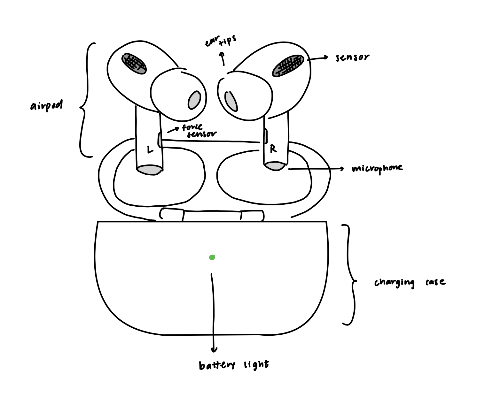
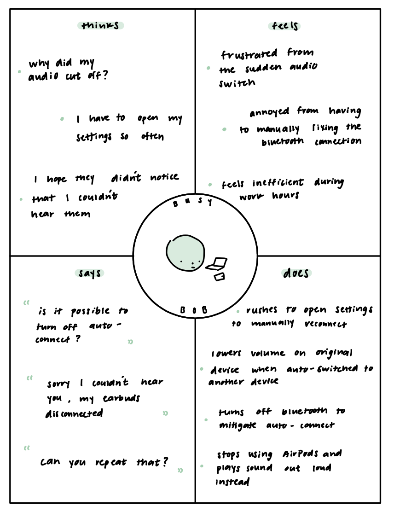
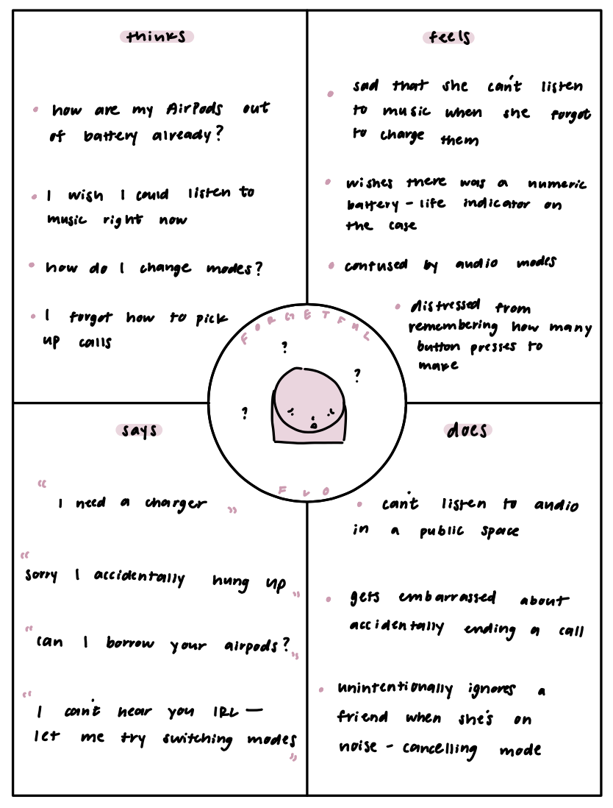

these airpods allow you to switch between two modes: how effective is this feature in fulfilling your everyday needs? do you ever feel the need to use the third mode?
do you interact with your earbuds when receiving a call? how transparent are the controls to successfully pick up or decline the call?
is connecting and/or disconnecting your airpods smooth? apple has recently implemented auto-switch between devices; how has this feature impacted your usage?
what are your thoughts on the charging case? are there any challenges with battery life on each airpod?
this generation has interactive buttons on each side for pause, skip, and playback features. do these features match expectation, and do you wish there were other tactile features?

To mitigate problems with wired earbuds, Apple came out with AirPods: the wireless Bluetooth earbuds. The AirPods Pro support pause, skip, playback, and three audio features.
key observations
two users had to manually connect and/or switch from the automatically connected device to their phone
one user tapped the desk to find out what mode their AirPods were in
interview responses
varied responses: one is content with the current audio mode without thinking about switching, one is content with the two modes but wishes the third could be incorporated seamlessly/efficiently, and one is satisfied with just the two modes
most users did not know of this feature, and one said they’d prefer the old-fashioned way of picking up the phone (via phone, not earbuds)
most users expressed mild annoyance with auto-switch or auto-connect when undesired
battery case behaves normally, but two users wish they could know the battery life of the case and the airpods displayed on the case
two expressed qualms with the playback feature being undetectable or not matching expectation; two wish they could adjust volumn as well
personas

Busy Bob is a working man with a busy job, many hobbies, and countless friends. Whenever he opens his phone to reply to a friend, his AirPods automatically switch to his phone,
diverting the audio from important work conferences on his computer. This persona represents a user of AirPods because busy individuals often use wireless earbuds between one task and another.

Forgetful Flo is a teenage girl with many hobbies. Today, she’s going to play a soccer game with her friends. Flo is busy and forgetful; she doesn’t check if her battery life is full,
and often finds herself out of battery. She can’t tell what mode her sound is on, and it is not apparent what tactile moves to make on her AirPods. This persona represents a user of AirPods
because everyday individuals can often forget if they charged their AirPods, what tactile features there are, and may generally need more indicators.